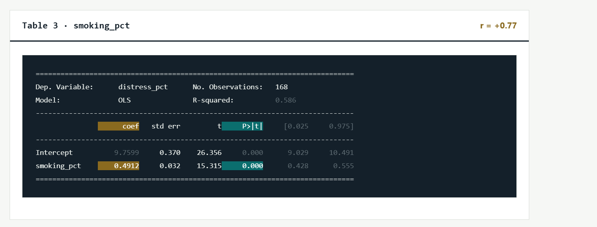

How smoking impacts mental distress

The table shows that places with higher smoking rates also tend to have higher rates of psychological distress. For every 1% increase in smoking, distress increases by about 0.49 percentage points on average. This shows a significant relationship, but it does not prove that smoking causes psychological distress.
In communities where more people smoke, more people also experience psychological distress. This may mean that people dealing with distress or difficult living conditions are more likely to smoke. It shows the importance of supporting both mental health and smoking prevention in communities.